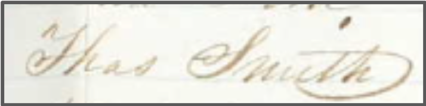

By Preston Carlson, Research Assistant, Chinese Railroad Workers in North America Project at Stanford.
Preston Carlson is an undergraduate student at Stanford University.
Before working with the CRRW, I assumed that our understanding of a given event or period of history was binary: either we understood it or not. The reality is, the information we have about the people and times being described is often quite limited. (Honestly, the almost complete lack of some types of information in the historical record still blows me away. Despite the thousands of Chinese immigrants who worked on the railroad—a sizable portion of which were known to be literate—we only have a single piece of writing from them.) So, we have to synthesize multiple sources for a more complete representation of history, and are constantly revising as more information comes to light. Far from being final, objective fact, what is understood to be our collective history is constantly evolving as new perspectives and analyses come to light—and I’m immensely grateful for the opportunity I’ve had to contribute to that evolution.
I found the Chinese Railroad Workers of North America Project very early on in my undergraduate career at Stanford, having never before worked on research. Professor Shelley Fisher-Fishkin introduced me to Professor Gordon Chang and Dr. Roland Hsu, who welcomed me to the project with open arms. In my first six months, I analyzed railroad payroll records to try to understand the extent and conditions of contracted labor on the railroad. In the process, I learned how research is actually performed. And when I think about my time with the project, that is what I am most grateful for: a deeper understanding of the process of history research and how our understanding of history is developed.
Before I analyzed the payroll records, I transcribed scans of them so that they were in a standardized format. This process went rather quickly because the records themselves were mostly in a standard row-column format, and I often found notes hinting at larger events and trends. (E.g., a Chinese worker was fined several days’ wages for striking a foreman. And well over a dozen times others were fined for leaving their tents late or refusing to work.) However, much of the information pertaining to the laborers contracted through external companies (like Sisson or Hung Wah) did not cleanly fit into this format. For instance, the “Name” and “Occupation” columns clearly stopped being used to list workers and their occupations. In fact, the information on the sheets changed so dramatically and without any explicit acknowledgement that for a while we thought that the names were subcontractors under the larger companies. After finding relevant context in several other sources, we realized these columns most likely held the names of foremen, the camps they oversaw, and the contracted laborers that answered to them. And often, because of the script in which the records were written, some names and abbreviations of them were extremely hard to parse.

What is that first symbol? An ‘H’? A ‘Yh’?
It’s actually a ‘Th’ in the beginning of the abbreviation ‘Thas’, short for Thomas!
During and after analyzing the payroll records, Professor Gordon Chang asked me to search through historical newspapers and Ancestry.com for information regarding Chinese workers contemporary with them. Unfortunately, local newspapers rarely had much information mentioning individuals except when discussing a crime committed against or by Chinese immigrants. Rather, the majority of articles that discussed Chinese immigrants expressed anti-Chinese sentiments. (This, despite the positive light shone on the railroad whose existence they were responsible for.) Ancestry.com proved fruitful when searching for additional information about the contractor Hung Wah—a prime example of an important individual we know existed but have very limited knowledge of. US census records of his death allowed us to determine some of his family members and where he lived, but we found almost records about his life between contracting with the railroad and the end of his life.
For my last year on the project, I primarily worked on fleshing out our central bibliography and accessioning research materials into the Stanford Digital Repository. Dr. Katie McDonough oversaw the accessioning process and taught us how to make moment-to-moment decisions about how to store the materials in a useful manner.
Through this decidedly different work, I got a much better feeling for what must be done to ensure that, when contributing scholarship to a field, others can follow and further develop that work. Specifically, that merely making sources and analyses available is not enough to encourage and enable additional high-quality research. Sources should be presented in such a way that researchers are able to quickly understand the completeness, accuracy, and relevance of each. Part of that is making sure that complete and consistent metadata are available for all source materials—people should have the opportunity to understand what information your work is based on. And beyond that, curating sources into collections to preserve their context and highlight both relevance to your work and their relationships to one another.
As we started accessioning the payroll records, we had to separate our interpretations of the materials from the materials themselves. Because, among the research assistants, I had the most experience with the payroll records, I did my best to note any assumptions or interpretations we made. The last thing we wanted was for our working assumptions of the materials to be conflated with what we knew for certain about them. And any time we felt that our interpretation was correct or important enough to be reflected in the metadata, I helped to ensure those interpretations and the reasoning behind them were explicitly stated. For instance, we had been operating under the assumption that whenever a name was paid for well over 26 days in a month, that it was actually payment for multiple contracted workers. We knew from other documents and the payroll records themselves that individual workers were usually paid for 26 days in a given month. So, in any document containing these entries, we mentioned this in its notes.
By the end of my time with the project, ensuring my work had all relevant context explicitly stated and immediately available felt like a personal mission. I felt a certain kinship with the future historians and researchers who would be using my research and analyzing where and when we’re living now. This project’s research has been a defining facet of my experience at Stanford—and I can’t wait to see where others will take it.